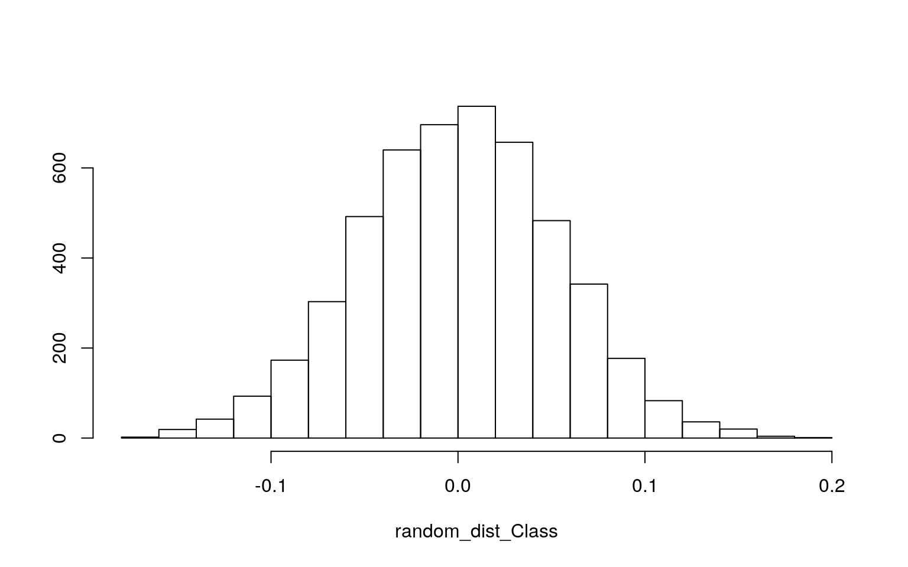

Introduction
In this data analysis project I am interested in examining if there are any trends as to who survived the incident with the Titanic. The 5 variables in this data set are the name of the passenger, whether they survived or not (binary), the sex of the passenger, the age (numeric), and what class they were in (numeric). There are 1309 observations in total. I anticipate some sort of trend for those who survived pertaining to either the age of the passengers, the passenger class, or both. I do not anticipate the sex of the passenger having an impact on this trend.
TitanicData <- carData::TitanicSurvival
head(TitanicData)## survived sex age passengerClass
## Allen, Miss. Elisabeth Walton yes female 29.0000 1st
## Allison, Master. Hudson Trevor yes male 0.9167 1st
## Allison, Miss. Helen Loraine no female 2.0000 1st
## Allison, Mr. Hudson Joshua Crei no male 30.0000 1st
## Allison, Mrs. Hudson J C (Bessi no female 25.0000 1st
## Anderson, Mr. Harry yes male 48.0000 1stTitanicData <- TitanicData %>% mutate(Class = as.numeric(TitanicData$passengerClass)) %>% select(-4) %>% na.omit()
TitanicData <- TitanicData%>%mutate(y=ifelse(survived == 'yes',1,0))MANOVA
man1 <- manova(cbind(age,Class)~survived, data = TitanicData)
summary(man1)## Df Pillai approx F num Df den Df Pr(>F)
## survived 1 0.14436 87.983 2 1043 < 2.2e-16 ***
## Residuals 1044
## ---
## Signif. codes: 0 '***' 0.001 '**' 0.01 '*' 0.05 '.' 0.1
' ' 1summary.aov(man1)## Response age :
## Df Sum Sq Mean Sq F value Pr(>F)
## survived 1 669 669.02 3.2272 0.07271 .
## Residuals 1044 216429 207.31
## ---
## Signif. codes: 0 '***' 0.001 '**' 0.01 '*' 0.05 '.' 0.1
' ' 1
##
## Response Class :
## Df Sum Sq Mean Sq F value Pr(>F)
## survived 1 76.00 76.005 119.51 < 2.2e-16 ***
## Residuals 1044 663.98 0.636
## ---
## Signif. codes: 0 '***' 0.001 '**' 0.01 '*' 0.05 '.' 0.1
' ' 1TitanicData%>%group_by(survived)%>%summarize(mean(age),mean(Class))## # A tibble: 2 x 3
## survived `mean(age)` `mean(Class)`
## <fct> <dbl> <dbl>
## 1 no 30.5 2.43
## 2 yes 28.9 1.88pairwise.t.test(TitanicData$age,TitanicData$survived, p.adj="none")##
## Pairwise comparisons using t tests with pooled SD
##
## data: TitanicData$age and TitanicData$survived
##
## no
## yes 0.073
##
## P value adjustment method: nonepairwise.t.test(TitanicData$Class,TitanicData$survived, p.adj="none")##
## Pairwise comparisons using t tests with pooled SD
##
## data: TitanicData$Class and TitanicData$survived
##
## no
## yes <2e-16
##
## P value adjustment method: noneFrom the results of the MANOVA it appeared that at least one of the numeric variables (age or Class) had a significant correlation with survival (p < 0.05). Univariate ANOVA anlaysis showed that there was a significant mean difference for the class of those who survived and those who did not. This significance did not carry over to the age of the passengers. It is highly likely the a type 1 error was made in this analysis as the MANOVA assumes linear relationships among variables as well as homegeneity of within-group covariances which is not met in this dataset. An adjusted bonferroni alpha of 0.05/2 = 0.025 should be used to maintain an alpha level of 0.05. 1 MANOVA, 1 ANOVA, and 2 t-tests were performed bringing the total to 4 tests of significance.
Randomization
TitanicData %>% group_by(survived) %>% summarize(means = mean(Class)) %>% summarize(mean_diff = diff(means))## # A tibble: 1 x 1
## mean_diff
## <dbl>
## 1 -0.548random_dist_Class<-vector()
for(i in 1:5000){
new<-data.frame(Class=sample(TitanicData$Class),
survived=sample(TitanicData$survived))
random_dist_Class[i]<-mean(new[new$survived=="yes",]$Class)-
mean(new[new$survived =="no",]$Class)}
{hist(random_dist_Class,main="",ylab=""); abline(v = c(-0.5484369 , 0.5484369),col="red")}
mean(random_dist_Class>0.5484369| random_dist_Class< -0.5484369)## [1] 0TitanicData %>% group_by(survived) %>% summarize(means = mean(age)) %>% summarize(mean_diff = diff(means))## # A tibble: 1 x 1
## mean_diff
## <dbl>
## 1 -1.63random_dist_age<-vector()
for(i in 1:5000){
new2<-data.frame(age=sample(TitanicData$age),
survived=sample(TitanicData$survived))
random_dist_age[i]<-mean(new2[new2$survived=="yes",]$age)-
mean(new2[new2$survived =="no",]$age)}
{hist(random_dist_age,main="",ylab=""); abline(v = c(-1.627141 , 1.627141),col="red")}mean(random_dist_age>1.627141| random_dist_age< -1.627141 )## [1] 0.0784Based off the results of the two tailed p-test, the probability of the Class difference between those who survived and those who did not randomly being as large as it is is 0. This means it is extremely unlikely for this to happen by chance and is in agreement with the t-test. The same analysis was performed looking at the differences in age between those who survived and those who did not. The resulting two tailed p-test gave a probability of 0.06 which is not significant and in agreement with the t-test performed earlier.
Linear Regression
library(sandwich)
library(lmtest)
TitanicData$age_c <- TitanicData$age - mean(TitanicData$age, na.rm=T)
TitanicData$Class_c <- TitanicData$Class - mean(TitanicData$Class, na.rm=T)
LinearModel <- lm(y~Class_c*age_c, data = TitanicData)
summary(LinearModel)##
## Call:
## lm(formula = y ~ Class_c * age_c, data = TitanicData)
##
## Residuals:
## Min 1Q Median 3Q Max
## -0.9224 -0.3519 -0.2012 0.4430 1.0244
##
## Coefficients:
## Estimate Std. Error t value Pr(>|t|)
## (Intercept) 0.4097258 0.0153092 26.763 < 2e-16 ***
## Class_c -0.2411668 0.0184860 -13.046 < 2e-16 ***
## age_c -0.0075769 0.0010888 -6.959 6.05e-12 ***
## Class_c:age_c 0.0003041 0.0012135 0.251 0.802
## ---
## Signif. codes: 0 '***' 0.001 '**' 0.01 '*' 0.05 '.' 0.1
' ' 1
##
## Residual standard error: 0.4555 on 1042 degrees of
freedom
## Multiple R-squared: 0.1444, Adjusted R-squared: 0.1419
## F-statistic: 58.62 on 3 and 1042 DF, p-value: < 2.2e-16TitanicData %>% select(age_c, Class_c, survived) %>% ggplot(aes(age_c, Class_c, color=survived)) +
geom_point()+geom_smooth(method="lm") bptest(LinearModel)##
## studentized Breusch-Pagan test
##
## data: LinearModel
## BP = 23.95, df = 3, p-value = 2.559e-05summary(LinearModel)$coef[, 1:2]## Estimate Std. Error
## (Intercept) 0.4097257829 0.015309207
## Class_c -0.2411668401 0.018485957
## age_c -0.0075769103 0.001088783
## Class_c:age_c 0.0003041337 0.001213512coeftest(LinearModel,vcov=vcovHC(LinearModel))##
## t test of coefficients:
##
## Estimate Std. Error t value Pr(>|t|)
## (Intercept) 0.40972578 0.01475668 27.7654 < 2.2e-16 ***
## Class_c -0.24116684 0.01764413 -13.6684 < 2.2e-16 ***
## age_c -0.00757691 0.00102599 -7.3850 3.117e-13 ***
## Class_c:age_c 0.00030413 0.00121931 0.2494 0.8031
## ---
## Signif. codes: 0 '***' 0.001 '**' 0.01 '*' 0.05 '.' 0.1
' ' 1The coefficients from the linear model state that for every 1 unit increase in y (survival) the Class_C decreases by 0.24. This essentially means those in the higher classes were more likely to survive. This same correlation with survival rate increasing as age decreases is also shown, although less prevalent. The slope of Class_c on survival is 0.0003 times greater than for age_c. The Breush-Pagan test revealed a p-value of 2.559 e-05 indicating that homoskedacity is not met and we reject the null hypothesis. The R^2 value indicates that our model accounts for 14% of the variation in the data. Regression results were recomputed using standard errors. The p-values changed very little across the board. No changes in significance were made from this recalculation.
Bootstrapped Standard Errors
Titanic_bootstrap <-sample_frac(TitanicData, replace=T)
Titanic_distn <- replicate(5000, {
Titanic_bootstrap <- sample_frac(TitanicData, replace=T)
Titanic_fit <- lm(y~Class_c*age_c, data = Titanic_bootstrap)
coef(Titanic_fit)
})
Titanic_distn %>% t %>% as.data.frame %>% summarize_all(sd)## (Intercept) Class_c age_c Class_c:age_c
## 1 0.01472309 0.01741903 0.001017597 0.001212631The coefficients from the bootstrapped standard errors were very different than those computed with the standard and robust SE’s. All of the new coefficients had positive values. From this information it is likely that the linear model does not do a good job at accounting for variation in the data and predicting survival from age or passenger class.
Logistic Regression 1
fit <- glm(survived~Class+age, data=TitanicData, family="binomial")
coeftest(fit)##
## z test of coefficients:
##
## Estimate Std. Error z value Pr(>|z|)
## (Intercept) 3.1143174 0.3271266 9.5202 < 2.2e-16 ***
## Class -1.1014645 0.0955319 -11.5298 < 2.2e-16 ***
## age -0.0369915 0.0054638 -6.7703 1.286e-11 ***
## ---
## Signif. codes: 0 '***' 0.001 '**' 0.01 '*' 0.05 '.' 0.1
' ' 1exp(coeftest(fit))##
## z test of coefficients:
##
## Estimate Std. Error z value Pr(>|z|)
## (Intercept) 22.51806 1.38698 13632.6118 1
## Class 0.33238 1.10024 0.0000 1
## age 0.96368 1.00548 0.0011 1TitanicData$prob <- predict(fit,type="response")
TitanicData$predicted <- ifelse(TitanicData$prob>.5,"yes","no")
table(truth=TitanicData$survived, prediction=TitanicData$predicted)%>%addmargins## prediction
## truth no yes Sum
## no 504 115 619
## yes 210 217 427
## Sum 714 332 1046(504+217)/1046 # accuracy## [1] 0.6892925504/619 # sensitivity## [1] 0.8142165217/427 # specificity## [1] 0.5081967504/714 # precision## [1] 0.7058824library(plotROC)
probs<-predict(fit,type="response")
Titanic_ROCplot<-ggplot(TitanicData)+geom_roc(aes(d=y,m=probs), n.cuts=0)
Titanic_ROCplotcalc_auc(Titanic_ROCplot)## PANEL group AUC
## 1 1 -1 0.7180672TitanicData$logit<-predict(fit,type="link")
TitanicData%>%ggplot()+geom_density(aes(logit,color=survived,fill=survived), alpha=.4)+
theme(legend.position=c(.85,.85))+geom_vline(xintercept=0)+xlab("logit (log-odds)")+
geom_rug(aes(logit,color=survived))The exponentiated coefficients indicate that an increase in class (i.e. from 1-3) results in a 70% decrease in survival and an increase in age results in a 4% decrease in survival. The accuracy, sensitivity, specificity, precision, and AUC of the model are 0.689, 0.814, 0.508, 0.705, and 0.718. This AUC value indicates that the model is fair, so not really good or bad.
Logistic Regression, Cross Validation, and LASSO
fit2 <- glm(survived~sex*age*Class, TitanicData, family = 'binomial')
coeftest(fit2)##
## z test of coefficients:
##
## Estimate Std. Error z value Pr(>|z|)
## (Intercept) 6.8114944 1.6171413 4.2121 2.531e-05 ***
## sexmale -5.6529168 1.7714767 -3.1911 0.0014174 **
## age -0.0303018 0.0413556 -0.7327 0.4637332
## Class -2.1536009 0.5747752 -3.7469 0.0001791 ***
## sexmale:age 0.0030316 0.0456411 0.0664 0.9470422
## sexmale:Class 1.6137188 0.6479188 2.4906 0.0127521 *
## age:Class 0.0038237 0.0155386 0.2461 0.8056192
## sexmale:age:Class -0.0127063 0.0181171 -0.7013 0.4830899
## ---
## Signif. codes: 0 '***' 0.001 '**' 0.01 '*' 0.05 '.' 0.1
' ' 1exp(coeftest(fit2))##
## z test of coefficients:
##
## Estimate Std. Error z value Pr(>|z|)
## (Intercept) 9.0823e+02 5.0387e+00 67.4954 1.000
## sexmale 3.5073e-03 5.8795e+00 0.0411 1.001
## age 9.7015e-01 1.0422e+00 0.4806 1.590
## Class 1.1607e-01 1.7767e+00 0.0236 1.000
## sexmale:age 1.0030e+00 1.0467e+00 1.0687 2.578
## sexmale:Class 5.0215e+00 1.9116e+00 12.0687 1.013
## age:Class 1.0038e+00 1.0157e+00 1.2790 2.238
## sexmale:age:Class 9.8737e-01 1.0183e+00 0.4959 1.621TitanicData$prob <- predict(fit2,type="response")
TitanicData$predicted <- ifelse(TitanicData$prob>.5,"yes","no")
table(truth=TitanicData$survived, prediction=TitanicData$predicted)%>%addmargins## prediction
## truth no yes Sum
## no 574 45 619
## yes 165 262 427
## Sum 739 307 1046(574+262)/1046 # accuracy## [1] 0.7992352574/619 # sensitivity## [1] 0.9273021262/427 # specificity## [1] 0.6135831574/739 # precision## [1] 0.7767253library(plotROC)
probs<-predict(fit2,type="response")
Titanic_ROCplot<-ggplot(TitanicData)+geom_roc(aes(d=y,m=probs), n.cuts=0)
Titanic_ROCplotcalc_auc(Titanic_ROCplot)## PANEL group AUC
## 1 1 -1 0.8474214set.seed(1234)
k=10 #
TitanicData<-TitanicData[sample(nrow(TitanicData)),]
folds<-cut(seq(1:nrow(TitanicData)),breaks=k,labels=F)
diags<-NULL
for(i in 1:k){
train<-TitanicData[folds!=i,]
test<-TitanicData[folds==i,]
truth<-test$y
fit2<-glm(survived~sex*age*Class, TitanicData, family = 'binomial')
probs<-predict(fit2,newdata = test,type="response")
diags<-rbind(diags,class_diag(probs,truth))
}
summarize_all(diags,mean) ## acc sens spec ppv auc
## 1 0.7992766 0.6120558 0.9277851 0.8535731 0.8450346library(glmnet)
y<-as.matrix(TitanicData$survived)
x<-model.matrix(survived~.,data=TitanicData)[,-1]
head(x)## sexmale age Class y age_c Class_c prob predictedyes
## Vande Walle, Mr. Nestor Cyriel 1 28 3 0 -1.881135
0.792543 0.12230649 0
## Torber, Mr. Ernst William 1 44 3 0 14.118865 0.792543
0.05554301 0
## Boulos, Master. Akar 1 6 3 0 -23.881135 0.792543
0.31333463 0
## Oreskovic, Miss. Jelka 0 23 3 0 -6.881135 0.792543
0.47940885 0
## Canavan, Mr. Patrick 1 21 3 0 -8.881135 0.792543
0.16891413 0
## Petterson, Mr. Johan Emil 1 25 3 0 -4.881135 0.792543
0.14075735 0
## logit
## Vande Walle, Mr. Nestor Cyriel -1.2258392
## Torber, Mr. Ernst William -1.8177038
## Boulos, Master. Akar -0.4120252
## Oreskovic, Miss. Jelka -1.0408814
## Canavan, Mr. Patrick -0.9668984
## Petterson, Mr. Johan Emil -1.1148645cv<-cv.glmnet(x,y,family="binomial")
lasso<-glmnet(x,y,family="binomial",lambda=cv$lambda.1se)
coef(lasso)## 10 x 1 sparse Matrix of class "dgCMatrix"
## s0
## (Intercept) -7.499477
## sexmale .
## age .
## Class .
## y 14.627466
## age_c .
## Class_c .
## prob .
## predictedyes .
## logit .The new model has a higher AUC of 0.847 along with increased accuracy, sensitivity, specificity, and precision. Clearly there is an interaction between the variables of Class, Age, and Sex that is important. The 10-fold CV showed very similar values across the board with the exception of sensitivity having a decreased value. This cross validation indicates the model does well for out of sample classification. Performing a LASSO regression on the data set reveals that the only significant predictor is y, the numeric variable created to classify if a passenger survived or not. This essentially means that none of the variables (sex, age, Class) can be retained as ‘good’ predictors of survival. This makes some inherent sense as it is hard to imagine that which class, age, or sex a passenger had would have any real impact on them surviving a monumental crash of a cruise ship. As none of the variables were selected as signifciant, no additional cross validation was performed.
Conclusion
In conclusion, it appears that none of the passenger variables (sex, class, age) had a significant impact on who survived the Titanic. At first, the linear regression model appeared to predict passenger survival from class however additional cross validation via logistic regression and LASSO regression showed this not to be the case. Overall this was an interesting investigation that revealed the different levels of prediction power for models that can easily be performed in R.
## R version 3.6.1 (2019-07-05)
## Platform: x86_64-pc-linux-gnu (64-bit)
## Running under: Ubuntu 18.04.5 LTS
##
## Matrix products: default
## BLAS: /stor/system/opt/R/R-3.6.1/lib/R/lib/libRblas.so
## LAPACK:
/stor/system/opt/R/R-3.6.1/lib/R/lib/libRlapack.so
##
## locale:
## [1] LC_CTYPE=en_US.UTF-8 LC_NUMERIC=C
LC_TIME=en_US.UTF-8
## [4] LC_COLLATE=en_US.UTF-8 LC_MONETARY=en_US.UTF-8
LC_MESSAGES=en_US.UTF-8
## [7] LC_PAPER=en_US.UTF-8 LC_NAME=C LC_ADDRESS=C
## [10] LC_TELEPHONE=C LC_MEASUREMENT=en_US.UTF-8
LC_IDENTIFICATION=C
##
## attached base packages:
## [1] stats graphics grDevices utils datasets methods base
##
## other attached packages:
## [1] glmnet_4.0-2 Matrix_1.3-2 plotROC_2.2.1
lmtest_0.9-38 zoo_1.8-8 sandwich_3.0-0
## [7] forcats_0.5.1 stringr_1.4.0 dplyr_1.0.6 purrr_0.3.4
readr_1.4.0 tidyr_1.1.3
## [13] tibble_3.1.1 ggplot2_3.3.3 tidyverse_1.3.1
knitr_1.30
##
## loaded via a namespace (and not attached):
## [1] httr_1.4.2 jsonlite_1.7.2 splines_3.6.1
foreach_1.5.1 carData_3.0-4
## [6] modelr_0.1.8 assertthat_0.2.1 cellranger_1.1.0
yaml_2.2.1 pillar_1.6.0
## [11] backports_1.2.1 lattice_0.20-41 glue_1.4.2
digest_0.6.27 rvest_1.0.0
## [16] colorspace_2.0-0 htmltools_0.5.0 plyr_1.8.6
pkgconfig_2.0.3 broom_0.7.6
## [21] haven_2.3.1 bookdown_0.21 scales_1.1.1 mgcv_1.8-33
generics_0.1.0
## [26] farver_2.0.3 ellipsis_0.3.1 withr_2.3.0 cli_2.5.0
survival_3.2-7
## [31] magrittr_2.0.1 crayon_1.4.1 readxl_1.3.1
evaluate_0.14 fs_1.5.0
## [36] fansi_0.4.1 nlme_3.1-151 xml2_1.3.2 blogdown_0.20
tools_3.6.1
## [41] hms_1.0.0 lifecycle_1.0.0 munsell_0.5.0
reprex_2.0.0 compiler_3.6.1
## [46] rlang_0.4.10 grid_3.6.1 iterators_1.0.13
rstudioapi_0.13 labeling_0.4.2
## [51] rmarkdown_2.6 gtable_0.3.0 codetools_0.2-18
DBI_1.1.0 R6_2.5.0
## [56] lubridate_1.7.10 utf8_1.1.4 shape_1.4.5
stringi_1.5.3 Rcpp_1.0.5
## [61] vctrs_0.3.6 dbplyr_2.1.1 tidyselect_1.1.0 xfun_0.22## [1] "2021-05-07 13:48:20 CDT"## sysname release
## "Linux" "4.15.0-142-generic"
## version nodename
## "#146-Ubuntu SMP Tue Apr 13 01:11:19 UTC 2021"
"educcomp02.ccbb.utexas.edu"
## machine login
## "x86_64" "unknown"
## user effective_user
## "kjj865" "kjj865"